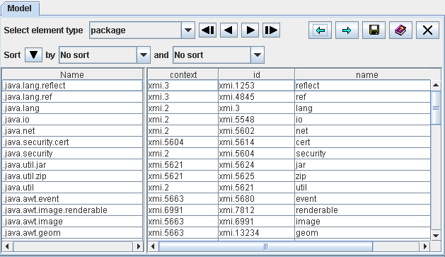

and
and  arrows in the upper right corner
of the model view you can move back and forth within the previously selected model elements.
arrows in the upper right corner
of the model view you can move back and forth within the previously selected model elements.| Prev - Next - Down | SDMetrics - the UML design measurement tool |

Figure 20: The View 'Model'
Figure 20 shows, for example, the table for metamodel element "package" with three of its attributes "id", "name", and "context" (see Section 7.1 "SDMetrics Metamodel" and Appendix A: "Metamodels"). The table provides the XMI id, name, and a reference to its owner (XMI id of the owner) for all packages of the UML model.
Likewise, you obtain tables for all other model element types with their respective attributes. As a result, you have a complete representation of your UML design in a table format (complete as far as SDMetrics' design measurement and rule checking requirements are concerned).
The context menu of the table provides quick access to the Kiviat diagram of the selected element,
as well as simple navigation feature for cross-reference attributes. Via the context menu for cross-reference
attributes you can find and show each model element referenced by the cross-reference attribute.
With the and arrows in the upper right corner
of the model view you can move back and forth within the previously selected model elements.
The most important feature of this view is the save button
 to export the tables to files (see Section 4.15.1 "Exporting Data Tables").
These files are easy to parse. This feature is useful if you want
to build a custom application that performs operations on your UML
designs, using the flexible XMI import capabilities of SDMetrics.
to export the tables to files (see Section 4.15.1 "Exporting Data Tables").
These files are easy to parse. This feature is useful if you want
to build a custom application that performs operations on your UML
designs, using the flexible XMI import capabilities of SDMetrics.
The model view also comes in handy when you create your own custom metamodels and XMI transformations (see Section 7 "SDMetrics Metamodel and XMI Transformation Files"). You can use this view to quickly verify if your XMI transformations work as intended.
| Prev | Up | Next |
| Section 4.11.2 "Viewing Connected Components" | Contents | Section 4.13 "The View 'Catalog'" |